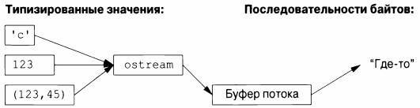
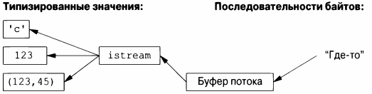

⇐ГЛАВА 9. СТРОКИ И РЕГУЛЯРНЫЕ ВЫРАЖЕНИЯ. 9.5 Советы 10.2 Вывод⇒
Библиотека потоков ввода-вывода обеспечивает форматированный и неформатированный буферизованный ввод-вывод текстовых и числовых значений.
ostream преобразует типизированные объекты в поток символов (байтов).
istream преобразует поток символов (байтов) в типизированные объекты.
Операции над потоками istream и ostream описаны в §10.2 и §10.3. Операции безопасны по отношению к типам и расширяемы для обработки пользовательских типов(§ 10.5).
Другие формы взаимодействия с пользователем, такие как графический ввод-вывод, обрабатываются через библиотеки, которые не являются частью стандарта ISO и поэтому здесь не описаны.
Рассматриваемые потоки могут использоваться для бинарного ввода-вывода и для различных типов символов, использовать локализации и передовые стратегии буферизации, но все эти темы выходят за рамки данной книги.
Потоки могут использоваться для ввода и вывода из std::string (§10.3), для форматирования в буферах string (§ 10.8) и для файлового ввода-вывода (§10.10).
Все классы потоков ввода-вывода имеют деструкторы, которые освобождают все ресурсы, которыми владеют потоки (например, буфера и дескрипторы файлов), т.е. они являются примерами применения идиомы "Захват ресурса есть инициализация" (RAII, §5.3).